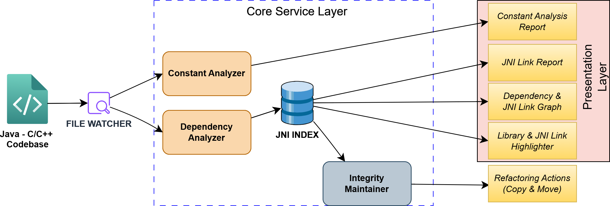
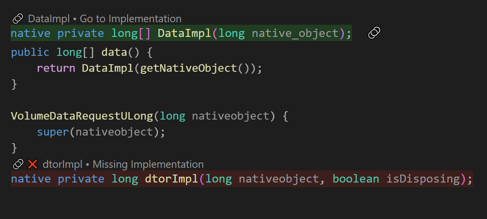

CrossLink is a static analysis tool designed to bridge the gap between
Java and C/C++ codebases using JNI (Java Native Interface).
It monitors file changes, analyzes cross-language dependencies,
and maintains link integrity to ensure that refactoring in one
language does not break bindings in the other.
Maintaining large codebases that utilize JNI is challenging because
standard IDEs often fail to track dependencies across the language barrier.
CrossLink solves this by providing real-time analysis, dependency graphing,
and automated refactoring support.
Architecture

Figure: CrossLink System Architecture
The system is composed of three primary layers:
Input Layer: File Watcher monitors Java and C/C++ source files for real-time changes.
Core Service Layer:
Constant Analyzer: Tracks shared constants between Java and Native code.
Dependency Analyzer: Maps the relationships between Java classes and C++ headers/implementations.
JNI Index: A central database storing the mapping of all links.
Integrity Maintainer: Ensures that moves or renames do not result in broken links.
A major challenge in cross-language tools is scalability.
Parsing an entire Java and C/C++ codebase for every keystroke is
not feasible due to high computational demands.
To maintain high performance and quick
feedback, CrossLink uses a persistent JNI Index.
Index Construction -
Upon initialization, CrossLink scans all c and
cpp files within the workspace. It extracts function
names that adhere to the standard JNI naming
convention (i.e., Java_PackageName_ClassName_MethodName).
These function signatures are mapped to their corresponding file paths in the JNI Index. This index is computed once and is only rebuilt when changes are detected in the C/C++ source files. These file changes are detected by File Watcher. File Watcher triggers re-analysis
in the dependency analyzer and the constant analyzer.
Lookup and Live Highlighting -
To provide live feedback in the editor, CrossLink minimizes parsing overhead by scanning only the active Java file. The process follows two steps:
(1) Native Scanning:
The tool scans the Java file, specifically looking for lines that include the native keyword. It captures the package, class, and method names to create the expected C++ function name.
(2) Index Query:
These computed names are checked against the pre-built JNI Index. If a match is found, the connection is noted, and the link is highlighted in green. If no match is found, the link gets highlighted in red, providing immediate visual feedback about the broken link.
Features
Dependency Visualization & Verification
Dependency and JNI Link Graph: The tool creates a visual graph of file-level dependencies. It clearly marks nodes where JNI implementations are missing. This gives developers a high-level view of the project’s binding status.
JNI Link Report: While the graph shows file dependencies,the Link Report panel provides detailed, method-level dependencies in a table format. It lists every specific Java-to-C++ method link.
Interactive Navigation
Live Link Highlighting: As developers type, the tool highlights native method declarations in real-time (green for linked, red for broken). This prevents waiting for runtime UnsatisfiedLinkError exceptions. As explained in below code snippet.
🟢 Green: Java method declaration present in some C/C++ file.
Cross-language navigation (Java → C++): Developers can click on a successfully linked Java native method to quickly jump to its corresponding C++ implementation definition. This simplifies code exploration. In below figure we can see Goto implementation option above the highlighted link.

Figure: Link highlighting with option to jump to C++ implementation
Hover information: Detailed information about library status and native method implementation when hovering over highlighted code
Color-coded status:
🟢 Green: Library exists with correct extension or native method has C++ implementation
🔴 Red: Library file is missing or native method implementation is missing
🔵 Blue: Library exists but has wrong extension for current platform
Platform Detection: automatically detects OS and expects appropriate library extensions.
Windows: .dll
Linux: .so
macOS: .dylib
Constants Management
Constants analyzer: Scans for constants across Java and C++ files
Naming suggestions: Provides constant naming based on context and usage
Magic number identification: Detects numbers that should be extracted as constants
Context-aware categorization: Groups constants by type, file, or usage context
Interactive Dashboard
Webview-based control panel: UI for managing all features
Real-time statistics: Shows dependency counts, connection metrics, and constants analysis
Search and filtering: Advanced filtering capabilities for all data (or in simple terms a search button)
Quick actions: Context menus for common refactoring operations (Copy or Move)
Requirements
Visual Studio Code
Java projects using JNI
C++ projects interfacing with Java
Example
public class HelloJNI {
static {
System.loadLibrary("hello");
}
private native void sayHello();
public native int add(int a, int b);
public native String getMessage(String name);
}